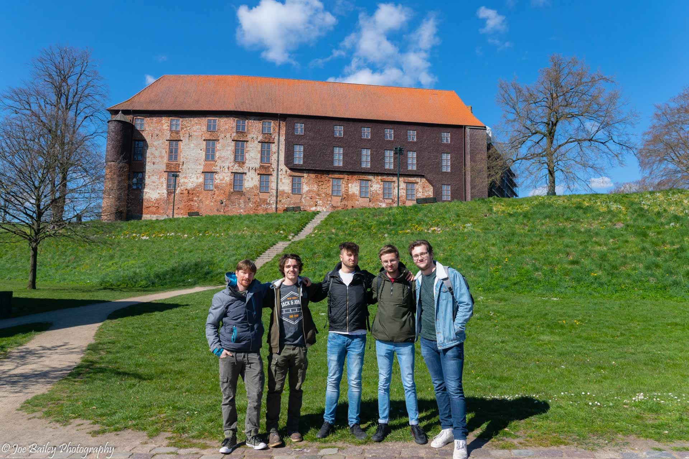
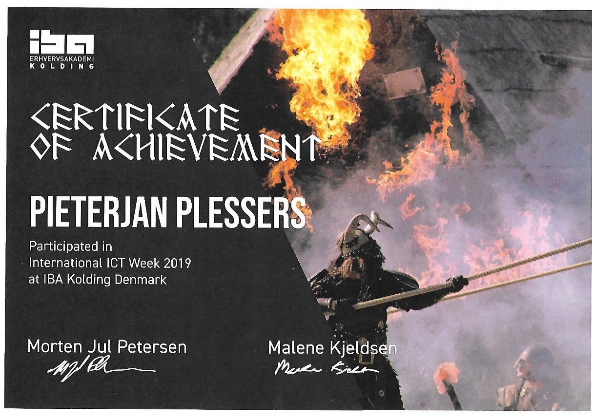
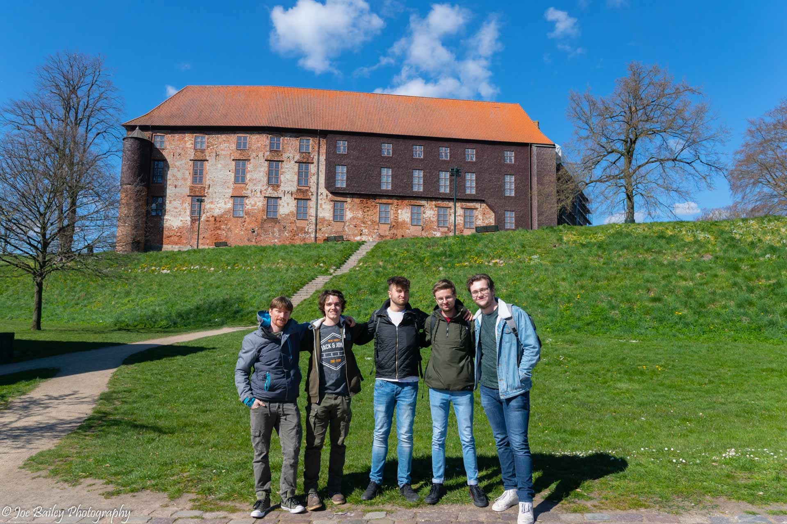
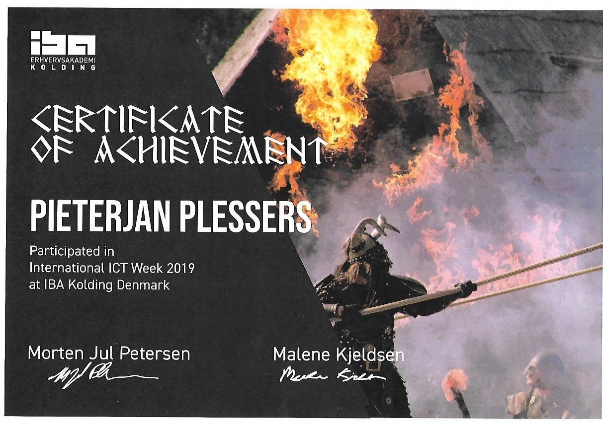

I-Talent 2019 - 2020
Pieterjan Plessers
Deze website is een visuele aanzet van mijn I-Talent portfolio voor 2019-2020. De navigatie aan de linkerkant geeft een globaal overzicht van de grootste topics binnen het portfolio. Aarzel niet en neem een kijkje!
Voorstelling
Wie ben ik?
Pieterjan Plessers, student aan de Hogeschool PXL. Ik studeer Toegepaste Informatica, met een specialisatie in Softwaremanagement. Dit wil zeggen dat ik de programmeer skills minder sterk onder de knie heb, maar ik ben sterker in het managen van teams om een probleem van de klant te analyseren en een oplossing hiervoor te bieden. Ondanks het feit dat het programmeren minder soepel gaat, betekent dit niet dat ik hier niks van ken of kan. Wij krijgen als softwaremanagers eigenlijk het volledige pakket, maar focussen ons dan meer op de business en management kant van het verhaal.
Wat zijn mijn interesses?
De business kant is dan ook een interesse van me. Ik zie mezelf natuurlijk starten in een bedrijf en daar gelijkelijk groeien door kennis en ervaringen op te doen. Als puntje bij paaltje komt en het juiste moment daar is, zie ik mezelf wel een eigen bedrijf opstarten. Om even te verduidelijken, dit is nú nog ver van mijn bookshelf, maar ooit met de juiste ervaring en expertise zie ik dit zeer zeker als een mogelijkheid/opportuniteit.
Een ander gebied van interesses voor mij is basketbal spelen, zwemmen of eens gaan fietsen. Dit klinkt zeer sportief, ook al is dit in de realiteit niet altijd even makkelijk. Een goede balans tussen studies en sport vinden is moeilijk (maar cruciaal). Als ik een momentje vrij heb probeer ik sport en beweging er zeker tussen te plaatsen. Daarbovenop een stevige wandeling maken met mijn hond is ondertussen een (dagelijkse) routine geworden.
Ik informeer me ook graag over allerlei dingen die er in de wereld gebeuren. Op de eerste plaats zijn dit vaak zaken die tech related zijn. Anderzijds lees ik ook vaak online nieuwssites, stream ik het nieuws vanaf mijn laptop (zowel Nederlandstalig als Engelstalige nieuwsbronnen), herbekijk ik afleveringen zoals De Afspraak… Deze interesse heb ik sinds kort veel dieper ontwikkelt door de situatie waarin de wereld zich op dit moment in bevindt. Mezelf informeren over de stand van zaken vind ik zeer belangrijk, maar ook wat de correcte aanpak is om deze pandemie zo snel mogelijk klein te krijgen. Ikzelf kan deze kennis dan doorgeven aan vrienden die minder geïnteresseerd zijn in het onderwerp.
Competenties en talenten
Laten we iets serieuzer en persoonlijker kijken naar wie ik ben als persoon.
Ik zou hier als eerste graag willen verwijzen naar het persoonlijke Thalento-rapport. Door middel van een honderdtal vragen in te vullen is hieruit een rapport gegenereerd. Ik kom hieruit als communiceren. Dit wil, alvast volgens het document, zeggen dat mijn sterkste skill de communicatie is tussen het team, klanten, stakeholders, mensen… Verder heb je ook nog denkers, doeners en samenwerken.
Ik sta volledig achter het resultaat van deze Thalento-test. Hierin staat dat ik het moeilijk vind om zelfstandig beslissingen te nemen, iets wat ik zeker nog moet leren. Ik kan knopen doorhakken als deze op de correcte manier ondersteund worden. Ik voer activiteiten zeker uit, maar dit moet structuur hebben en goed georganiseerd zijn. Het is nodig dat de omgeving rondom mij goed aangeeft wat er moet gebeuren, zodat ik voor mezelf en mijn team weet waaraan we aan toe zijn. Het is moeilijk voor mij om dit zelf uit te zoeken, want als perfectionist denk ik al veel (te veel) na over hoe het eindresultaat moet zijn.
Ik ben een extraverte persoon op gebied van communiceren met mensen. Ik hou graag wel eerst wat afstand, voordat ik mezelf blootstel. Ik heb een goed besef van wie ik ben. Onder druk kan ik me goed beheersen. Ik krijg vooral voldoening wanneer dat ook echt gezegd wordt, als men het opgeleverde werk erkent. Ik wil ook graag een invloed hebben op de gang van zaken. Het is moeilijk om als teamlid op de achtergrond te staan, zeker wanneer ik een idee heb over het onderwerp van conversatie. Ik kan hier vaak mijn zegje ook over doen. Iedereen begrijpt duidelijk wat ik bedoel en waar ik naartoe wil. Door het relativeren van zaken heb ik het soms moeilijk om mezelf volledig in te leven in de belevingswereld van iemand anders. Het kan dan overkomen alsof ik streng ben of niet kan meeleven met iemand, maar dit is vaak niet het geval.
De mensen rondom mij zeggen vaak dat ik een rustig en eerlijk persoon ben. Ik heb een sterk zelfbewustzijn. Ik voel me ook niet meer of minder dan anderen en dat laat ik ook blijken. Veel mensen zeggen ook, al van jonge leeftijd, dat ik ouder ben (was) dan mijn leeftijdgenoten. Er was op gebied van mentale leeftijd een serieus verschil te zien. Natuurlijk heb ik een kinderlijke jeugd gehad, maar over sommige zaken redeneerde ik anders t.o.v. mijn leeftijdsgenoten.
Het Thalento-rapport wordt op het einde van dit document toegevoegd. Klik hier om het te bekijken.
Mijn ambities
Eén van mijn ambities is gelijk aan de interesse die ik hierboven al aanhaalde, om later een eigen zaak te starten. Dit is iets wat ik zeer erg bewonder en veel respect voor heb. Het is moeilijk om vandaag de dag met iets nieuw, fris en interessant concept op de markt te komen. Je hoort geregeld “alles bestaat toch al”, maar daar ben ik het niet mee eens. Ik denk daarom dat het zeer interessant én belangrijk is om eerst voldoende onderzoek te gaan doen voordat men (of ik) de stap gaat zetten om een bedrijf uit de grond te stampen. Onderzoeken voor wie je een probleem gaat oplossen, hoeveel mensen je ermee kan bereiken, potentieel naar uitgroeimogelijkheden…
Vijf jaar vanaf vandaag wil ik een betere teamleider worden, maar ik zou het eerder binnen een klein team zien. De rol van Scrum Master opnemen en in deze rol specialiseren met de benodigde cursussen en workshops. Een ervaren Scrum Master zijn die eerst anderen de kneepjes van het vak aanleert, alsook de tips en tricks doorgeven die ik uit ervaring heb opgedaan. De valkuilen van de rol als Scrum Master worden ook aangehaald. Vervolgens kan ik doorgroeien naar project-/teamlead, om dan uiteindelijk terecht te komen in een positie waarin ik de beslissing moet nemen om al dan niet zelfstandig te gaan met mijn eigen bedrijf. Ik heb tegen die tijd de ervaring van het werkveld opzak alsook mijn eigen skills en kennis naar een hoger/professioneel niveau getild.
Mijn kunnen nu en later
Ik kan mezelf rustig blijven houden in barre omstandigheden, rationeel nadenken over beslissingen die een grote impact hebben op mijn persoonlijk- of professioneel leven en relativeren wanneer het voor anderen weleens teveel kan worden.
Ik wil mezelf nog verder verdiepen in het web development. Dit is een interesse van me die ik al van jonge leeftijd had. Het is immers tijdsintensief en vraagt veel van me, omdat ik niet zo sterk ben in het development op zich. Door de interesse helpt dit wil, het doorzettingsvermogen is hoger.
Ik zou graag ook willen leren hoe ik voor grote groepen spreek. Dit vind ik extreem moeilijk. Zodra we een voorstelling of verdediging hebben voor onze junior collega’s, ongeacht hoelang ik iedereen al ken, word ik toch altijd zeer zenuwachtig. Dit zijn momenten waar ik het zeer moeilijk vind om de situatie te relativeren. Om deze skill bij te schaven zou ik graag trainingen, seminaries of workshops willen bijwonen, al dan niet ondersteund door het bedrijf waar ik dan werk.
Overzicht activiteiten

(Em)passie
Locatie: Hogeschool PXL
Datum: 20 en 27/02/2019
Extra activiteit: Neen
Duur: 2 dagen
Omschrijving:
Een uiteenzetting van boeiende activiteiten die ons klaarstoomden om met ons team aan het research project te starten. Aan de hand van onze Thalento-testen werden de teams opgesteld en kregen we tijdens deze sessies duidelijk door waarom ze precies ons hadden samen geplaatst voor het project.Locatie: Hogeschool PXL
Datum: Semester 1 van het 3de jaar (november/december)
Extra activiteit: Ja
Duur: 5 tal sessies
Omschrijving:
Initiatief dat volledig van mezelf komt. Ik merk dat ik hier vaak last van heb, dus wou ik de uitdaging aangaan om hier een workshop/training rond te volgen. Uit deze training heb ik heel wat zaken kunnen toepassen en heb ik hier zeker iets uit geleerd. Het is nog steeds lastig met momenten, maar ik doe mijn best om de tips & tricks toe te passen.Ondernemend & innovatief
Locatie: Corda Campus
Datum: 20 en 21/02/2020
Extra activiteit: Neen
Duur: 2 dagen
Omschrijving:
Door middel van het gebruik maken van icoontjes, kleuren en cijfers kunnen er eenvoudige instructies getoond worden aan mensen met een beperking om bewegingstrainingen te realiseren. Hiervoor werd het concept rond een mobiele applicatie bedacht en in zoverre mogelijk uitgewerkt.Locatie: Hogeschool PXL & Corda Campus
Datum: 25/09, 26/09 en 27/09/2020
Extra activiteit: Neen
Duur: 3 dagen
Omschrijving:
3-daagse uiteenzetting van verschillende externe bedrijven die BI/Big Data gerelateerde leerstof introduceerden alsook toepassingen met de correcte ondersteuning.Locatie: Corda Campus
Datum: vooral mijn eerste en tweede academiejaar
Extra activiteit: Ja
Duur: van ± 9u tot ± 13u
Omschrijving:
De nieuwe generatie jongens en meisjes warm maken voor IT. Dit doen we door Coderdojo sessies te organiseren over heel België, waarin verschillende onderwerpen/gebieden naar voor komen. Programmeren in Python, Lego Mindstorms, Scratch… Ik heb vooral deelgenomen aan de zaterdag-sessies die doorgingen op de Corda Campus.Locatie: Thuis en bij klant samenkomen
Datum: feb. 2018 – mei 2018
Extra activiteit: Ja
Duur: 4 maanden (+ onderhoud)
Omschrijving:
Website voor zelfstandige schilder/decorateur. Door verschillende gesprekken te voeren in het verleden zag ik dat de nood zeker aanwezig was. Deze ervaring kwam voor mij ideaal uit. Op development gebied is dit iets dat me erg interesseert. Ik kon hiermee iemand helpen om zijn zaak meer in the picture te krijgen alsook een leuke bonus ontvangen.Locatie: Corda Campus & Hogeschool PXL
Datum: eerste academiejaar
Extra activiteit: Ja
Duur: 4-tal meetings per jaar
Omschrijving:
Tijdens het eerste jaar nam ik deel aan de studentcommissie, een organisatie van studenten, lectoren, begeleiders, opleidingshoofden… die verschillende zaken bespreekbaar maakten om faciliteiten voor studenten open te stellen. Hier konden allerlei onderwerpen besproken worden omtrent begeleiding, informatie en communicatie naar studenten toe, les- en examenroosters…Multi- & disciplinariteit
Locatie: Hogeschool PXL
Datum: 18/12/2017
Extra activiteit: Neen
Duur: 2 uren
Omschrijving:
Theoretische uiteenzetting die de introductie van AI in de toekomst zal brengen. Er kwamen een heel aantal use cases naar voren. Dit was een relatief theoretisch seminarie, waar ik als softwaremanager snel de draad kwijt was.Locatie: Hogeschool PXL Congress
Datum: 22/05/2019
Extra activiteit: Neen
Duur: 2 uren
Omschrijving:
Tim Verheyden kwam spreken over zijn nieuwe documentaire die te zien is op canvas. Hierin gaat hij de confrontatie aan met de moeder van alle social media, Facebook. Hij kaart verschillende kijkhoeken aan waarvan sommige snel duister kunnen worden. Tim toont in deze documentaire aan dat wij als gebruiker van het kanaal zo veel mogelijk moeten delen, maar dat Facebook dit zelf eigenlijk niet doet.Locatie: Hogeschool PXL
Datum: 24/04/2019
Extra activiteit: Neen
Duur: 4 uren
Omschrijving:
Een duidelijke uiteenzetting over de voor- en nadelen wanneer er focus wordt gelegd op performance van een applicatie in een bedrijf. Nadien een bondige uitleg over het gebruik van JMeter met daarop volgend een workshop waarin we verschillende use cases aangekaart kregen. Deze cases konden dan telkens door middel van JMeter opgelost worden.Locatie: Hogeschool PXL Congress
Datum: 20/02/2019
Extra activiteit: Neen
Duur: 2 uren
Omschrijving:
Droneport, gesitueerd in Sint-Truiden, is een bedrijf dat de toekomst ziet groeien in drone transport. Zij zien meer drone activiteit in de toekomst, van kleinschalige pakjes/eten dat geleverd wordt, tot transport mogelijkheden voor mensen.Locatie: Hogeschool PXL
Datum: 12/12/2018
Extra activiteit: Neen
Duur: 2 uren
Omschrijving:
Bij Ordina ligt de focus op testautomatisering. Dit kwam ook sterk naar voren tijdens dit seminarie. Het testen van software is volgens hun, net zoals veel andere bedrijven vandaag de dag, alleen maar een positief gegeven. Men bespaart veel geld en menselijke fouten worden uitgesloten doormiddel van automatisatie. Dit seminarie was eerder theoretisch.Locatie: Hogeschool PXL
Datum: 04/12/2019
Extra activiteit: Neen
Duur: 4 uren
Omschrijving:
Het eerste seminarie voor mij op de PXL die volledig in het Engels was. Dit onderwerp was alweer omtrent het testen van software in een digitaal tijdperk. De spreker bracht zijn verhaal op een leuke en unieke manier, waardoor het mij persoonlijk meer interesseerde.Locatie: Hogeschool PXL
Datum: 27/11/2019
Extra activiteit: Neen
Duur: 3 uren
Omschrijving:
Zeer interessante voorstelling over de toekomst van telecommunicatie en netwerken over 5G frequenties. We werden eerst terug genomen in de tijd om de oorsprong van de eerste communicatie kanalen te begrijpen om zo te kijken naar de technologie van vandaag de dag. Er werden ook voorbeelden van use cases opgesomd met ieder zijn voor- en nadelen.Locatie: Hogeschool PXL Congress
Datum: 06/11/2019
Extra activiteit: Neen
Duur: 3 uren
Omschrijving:
Dit seminarie komt zeer sterk overeen met het seminarie van 24/04/2019. Deze keer waren de oefeningen omtrent het testen van software met JMeter kleinschaliger. Dit zorgde ervoor het voor velen gemakkelijker was om te volgen. Op het einde vroegen de sprekers naar de feedback van ons, hier mochten we eerlijk zijn wat we vonden (als dit maar constructief was).Locatie: Hogeschool PXL
Datum: 18/12/2019
Extra activiteit: Neen
Duur: 4 uren
Omschrijving:
Een seminarie die de combinatie tussen theorie en praktijk probeerde te verwezenlijken, maar ik was al rap niet meer mee. Het voelde erg aan dat ik, maar ook anderen, niet de juiste set programmeer skills hadden, ook al was dit een testing seminarie. Er werd tijdens de praktijk gebruik gemaakt van Postman, een tool die ik wel al kende van het IT project, dus dat verliep vlotter.Locatie: Hogeschool PXL
Datum: 18/02/2020
Extra activiteit: Ja
Duur: 3 uren
Omschrijving:
Het laatste seminarie, om het af te leren. Opnieuw ging deze over het testen van software, maar deze keer in een .Net omgeving. Tijdens het praktijk gedeelte mochten wij ook zelf Unit Testen schrijven die dan klassikaal werden besproken en gecorrigeerd. Dit vond ik wel een leukere manier van werken en het verliep ook vlotter, omdat ik hier reeds ervaring mee heb.(Internationaal) samen(net)werking
Locatie: Kolding, Denemarken
Datum: 7 tot 12/04/2019
Extra activiteit: Neen
Duur: 6 dagen
Omschrijving:
Een BUS-IT week van ± 6 dagen die doorging in Kolding, Denemarken. Het concept was om een lokaal bier te associëren met Vikings en de levensstijl van die tijd. Ons team wilde dit bekomen door aan story telling te doen, aan de hand van een spel. Het eindresultaat, rekening houdend met het aantal dagen, was echt top! Dat vonden ook de juryleden.Selectie van activiteiten
SOGETI - Testing for Robotics and AI: “Testing in The Digital Age”
Mijn eerste Engelstalig seminarie. Dit is iets wat niemand had verwacht bij het binnenstormen van deze meneer. Daniël Maslyn, afkomstig van San Francisco in de Verenigde Staten, nu woont hij in Gent voor een paar jaar. De eerste woorden van Daniël waren al voldoende om iedereens aandacht te krijgen zodat er naar zijn verhaal werd geluisterd. De introductie was heel relaxed met hier en daar een Nederlandstalig mopje, want ja, Nederlands kon hij nu ook stillaan beter (ook tal van andere talen). Als studenten kregen we direct door dat dit een ander soort seminarie zou worden als wat we gewoon zijn. Meestal wordt het bedrijf voorgesteld waarvoor ze werken, vervolgens een deel theorie doorgenomen, al dan niet rekening gehouden of iedereen mee is met de geziene concepten. Dit was hiér helemaal niet het geval. Hij zorgde voor voldoende pauzes, vroeg verschillende malen of er vragen waren en hield het over het algemeen begrijpelijk voor iedereen in de aula.
De uiteenzetting van het seminarie startte met een brede verklaring van verschillende vaktermen omtrent het onderwerp “Testing in The Digital Age”. De meeste vaktermen had ik al eens gehoord, maar een deel specifieke termen die meer bij robotica, IoT en AI hoorden had ik persoonlijk nog nooit mee te maken gehad. Dit komt volgens hem omdat deze sectoren nog niet volop ontwikkelt zijn. Het testen van applicaties, al dan niet automatisch, is ook nog relatief nieuw bij veel bedrijven én moet vandaag de dag nog altijd in veel bedrijven toegepast worden. Over deze termen is Daniël snel gegaan. Dit was natuurlijk niet de essentie, want hij had ons gevraagd om alle laptops toe te doen, dus notities nemen was niet noodzakelijk. Daniël zag liever een mondiaal gesprek tussen hem en het publiek met nadien een paar praktijk oefeningen. Hier leerden we meer van bij t.o.v. pure theorie door te nemen, waar de meeste mensen nog nooit van gehoord hebben.
Vervolgens, na de introductie van de werkprocessen van IoT/robotica testing en het verschil aan te halen tussen de verschillende testing sectoren, was het tijd voor een praktische aanpak. Merendeel van de studenten had hier duidelijk meer interesse in, omdat ze al op de hoogte waren van de vriend die Daniël had meegenomen (foto hierboven). Dit is een robot die hij gebruikt tijdens presentaties zoals dit seminarie alsook op het werkveld voor effectief denkprocessen of ingebouwde software te testen. We werden opgesplitst in verschillende groepjes en van elk groepje werd er 1 junior collega aangeduid als stille supervisor. Hij/zij ging samen met Daniël naar buiten en kregen een aantal instructies. Zij mochten kost wat kost niets zeggen, omdat de robot dit ook niet kon. Met behulp van verschillende type muntstukken moest de rest van het groepje het gedrag van de supervisor analyseren wanneer hij of zij een muntstuk ontving. Het klinkt heel vaag en geloof mij, op het begin was dit voor ons ook zo, maar uiteindelijk kwam je tot een soort patroon of logaritme van het denkproces van de supervisor alsook van de robot. Deze moesten overeenkomen, dan had je het logaritme ‘gekraakt’ (gevonden). Om af te sluiten deed de robot een kort dansje van vreugde.
Als ik terugkijk op dit seminarie was het toch interessant geweest om een aantal zaken te kunnen noteren, alsook de presentatie ter beschikking hebben. Dit vind ik een beetje jammer. Ik snap het standpunt van Daniël, zo kan er meer interactie worden gecreëerd en niemand moet zich inhouden om vragen te stellen of een opmerking te maken. De manier waarop Daniël presenteert en zijn verhaal naar voren bracht vond ik echt geweldig. Ik heb iets bijgeleerd en me geamuseerd, dit mag ook wel eens. Interessante onderwerpen en iets bijleren is één zaak, maar het plezier erin houden door de interactie doorheen de aula is een aanpak die me echt wel beviel.
Nadien ben ik nog kort extra informatie gaan zoeken over het testing van IoT/AI/robotica, maar dat was een moeilijke opgave. Hetgeen dat er verteld werd tijdens het seminarie was zeer moeilijk terug te vinden. Dit komt waarschijnlijk door de kennis die ontbreekt vanuit mijn kant. Tijdens de presentatie lag er ook een boek klaar op de bureau van onze spreker, daar heb ik even doorgebladerd na het seminarie (foto beneden). Op Pluralsight ben ik ook opzoek gegaan naar courses die verband hadden met dit type testing, maar het zoeken was tevergeefs.
Deze technologie toepassen binnen eigen projecten is nog niet gebeurd. Ik ben tenslotte minder sterk in het heel technische aspect. Maar ondanks dat vind ik het interessant, alsook de conversatie in hoe ver AI en robotica mogen gaan. Het is misschien nog wel een goede zet, in mijn ogen, om hier meer op in te zetten. Op die manier kan er eerst getest worden op een killerrobot voordat deze zich ook echt ontwikkeld en de wereld overneemt.
Ericsson - Inleiding tot 5G
Het seminarie omtrent het nieuwe en snel opkomende 5G netwerk werd gegeven door Tijs en Serge, 2 mannen die werken bij Ericsson. Ericsson is binnen België één van de koplopers wanneer het aankomt op de nieuwe 5G technologie. Maar zij zien 5G anders dan dat wij het als gewone consument zien.
5G is een frequentie, hetzelfde als 4G, 3G enzovoort. Op deze frequentie kan men bepaalde communicatiemiddelen koppelen om zo in verbinding te staan met mensen rondom u. Laten we even terug in de tijd gaan. Als we kijken naar het 1G netwerk, het allereerste netwerk waar basis mobiele telecommunicatie kon op gevoerd worden. Op deze frequentie was het alleen mogelijk om een specifieke verbinding te leggen tussen jouw toestel en een centrale. Op die zijn beurt legde de centrale de connectie verder naar het toestel dat jij wilde bereiken (collega, vriend, familielid…). De radiosignalen van 1G zijn analoog. Wanneer we dan gaan kijken naar de nieuwere versie 2G, geïntroduceerd in 1991, zien we dat deze gebruik maakt van digitale netwerken. Het 2G netwerk staat los van de telefooncentrale, men kan gewoon bellen naar iedere persoon die hij/zij wilt. Het 2G netwerk (frequentie) is niet gemaakt om op te surfen, want deze is daarvoor te traag. Zo arriveren we dus bij 3G. Vanaf de introductie van 3G konden mobiele telecommunicatie apparaten, zoals telefoons en de eerste smartphones surfen op het web. Bij 2G ging dit in principe ook, maar gewoon abnormaal traag. 2G was hiervoor niet gemaakt, maar 3G dus wel. Hij kon hoge bandbreedtes garanderen en snelheden die het mogelijk maakten om internet verbinding op mobiel efficiënt te gebruiken, draadloos telefoneren, draadloze internet verbinding, video gesprekken voeren…
Zowel tussen 3G en 4G zijn er nog verschillende subversies gearriveerd (3.5G, 3.75G, 4.5G) met elk zijn extra features en security oplossingen. Vanzelfsprekend is dus de volgende versie nu aangebroken, namelijk 5G. De snelheden van het nieuwe 5G netwerk zijn om vanachter over te vallen. Stabiele 1Gbps en meer, als je direct (korte afstand) in contact staat met een zendmast van jouw straat bijvoorbeeld. Maar deze snelheden kunnen voor veel betere doeleinden worden gebruikt, denk maar aan het live streamen van hoge kwaliteitsvideo die geen lag ondervind. Op die manier kunnen artsen operaties gaan uitvoeren en dit aan andere artsen tonen door middel van een livestream die iedereen van bij zijn/haar thuis kan volgen. De volgende stap is dat men apparatuur koppelt (robotica, IoT…) aan een softwaresysteem en dat de dokter de apparatuur van afstand kan beheren en op zijn beeldscherm kan meevolgen wat hij/zij precies op dat moment doet. Een andere use case kan zijn om automobiele voertuigen op een 5G netwerk aan te sluiten. De data die uit bijvoorbeeld een gezinswagen gegenereerd wordt iedere keer als mama of papa ermee rijd is ongelooflijk veel. Niet perse veel Gigibyte aan data, maar wel veel kleine stukjes data, data waaruit kan geleerd worden. Als dit dan zou toegepast worden op alle nieuwe gezinswagens en er binnen x aantal jaar miljoenen wagens rondrijden kan dit een schat van informatie worden om te analyseren wat het rijgedrag is van de gemiddelde mens, op welke plaats is het vaak druk, wie rijdt in het algemeen te snel of juist te traag… Het lijkt me nu vrij duidelijk dat dit over het algemeen een zeer theoretisch, maar tegelijkertijd leerrijk seminarie was. Theoretisch in de zin van het onstaan van deze technologieën doorheen de decennia. Het is door middel van diezelfde reden ook juist leerrijk. Het is ook zeer interessant om te kijken en samen te bepalen voor welke use cases 5G het beste gebruikt kan worden. We weten wat de use cases waren voor de vorige netwerken/frequenties. We kunnen ons dan de vraag stellen waar de introductie van 5G het meeste profijt zal opleveren om zo de nieuwe technologie het beste te benutten.
Persoonlijk denk ik toch dat we eerder naar de IoT, connected devices, smart cities, personal health, smart manufacturing… moeten kijken. Het is natuurlijk cool om een speedtest uit te voeren en aan je vrienden te laten zien dat jij, met behulp van een toestel (smartphone) die 5G ondersteund, een monstersnelheid van meer dan 1Gbps aan kan. Maar deze use case is zeer minimaal. Streaming van muziek, films, YouTube video’s, Netflix… zijn zaken die hierin nog een rol kunnen spelen. Je kan immers ook een grotere app binnen enkele seconden installeren. Een berichtje via Messenger versturen zal alvast niet merkbaar zijn voor een mens.
Hierin hoort ook een zekere vorm van verantwoordelijkheid onder. Als je vandaag de dag weet dat sociale media bedrijven al zoveel weten van ons, zijn wij dan nog bereid om andere (persoonlijke) zaken bloot te geven? Zaken waarbij we eerst niet bij nadenken, maar nadien toch blijken van belang te zijn. Hier moeten zeer duidelijke maatschappelijke, regionale en internationale afspraken rond gemaakt worden. Zo weet elk bedrijf ook hoe ver zij mag gaan in het verhaal van 5G, zodat indien nodig ook de nodige sancties kunnen getroffen worden.
De opleiding (Toegepaste Informatica) kan binnen het segment 5G ook zeker meer informatie en lessen voorzien hierover. Dit is de toekomst en misschien is het niet slecht om als junior collega’s hierover te leren en na te denken. Zo kunnen zij mee beslissen in de toekomst wat wel en niet mag toegepast worden.
Care-athon G-Karate (Hackaton)
Sinds de start van mijn opleiding is dit de enigste hackaton waaraan ik heb meegedaan. Persoonlijk ben ik hier niet trots op. Ik had liever veel meer hackatons (of care-athons) gevolgd, maar meestal komen deze vrij technisch over en kreeg ik een gevoel dat dit niet echt voor mij was weggelegd. Daarbovenop had ik altijd het idee dat een hackaton puur resultaat en skills tonen was, maar bij deze care-athon bleek dat het vooral om brainstorming en concepten uitwerken gaat. Ideeën die in de echte wereld tot stand kunnen komen, met behulp van meer tijd en resources.
De care-athon van G-Karate was een 2-daagse bijeenkomst op de Corda Campus, te Hasselt. Het concept van de hackaton was om mensen met een beperking, lichte of zware beperking, te doen bewegen aan de hand van een app. De app kan gebruikt worden door mensen die zich als begeleider of trainer opgeeft alsook de persoon met de handicap zelf. Deze handicap kan gaan van autisme, blinden, verstandelijke of lichamelijke beperkingen (zoals rolstoelpatiënten)… De trainers gebruiken de app om sporters te coachen volgens hun beperking en hun niveau. Sommige trainers kunnen ook nieuwe oefeningen inbrengen in de app. De app maakt gebruik van kleuren, iconen en cijfers als eenvoudige instructies om allerlei leuke trainingen mogelijk te maken. Verder kan je in de app het profiel van de gebruiker aanpassen en indien nodig het niveau verhogen of verlagen. Een trainer kan ook steeds zelf custom oefeningen aanmaken en toevoegen. Zoals de naam G-Karate het al zegt, zijn de oefeningen gebaseerd op de basis unieke bewegingsleer van Karate.
De app werkt met duidelijke visuele beelden. In dit visueel beeld is een belangrijk werkinstrument de 8 “key points”. Elke key-point duidt een plaats aan op het lichaam en resulteert in een techniek. Via de app moeten key-points via oefeningen aangebracht worden op 3 niveaus van moeilijkheidsgraad. Er wordt hier bovenop ook gewerkt met een oefenmat om mensen te laten bewegen (natuurlijk niet van toepassing voor rolstoelgebruikers). De oefeningen op deze oefenmat worden aangepast aan ieder niveau. Op de onderstaande afbeeldingen is te zien dat er voeten, handen, pictogrammen, getallen en verschillende kleuren gebruikt worden om de oefeningen efficiënt te kunnen uitleggen of voordoen. Om de oefeningen met handen uit te kunnen voeren worden richtingskaarten gebruikt. Op deze kaarten staan andere pictogrammen, kleuren en getallen. De richtingskaarten worden gebruikt om aan te geven in welke van de 4 richtingen de persoon moet draaien ne/of bewegen tijdens zijn/haar oefening. Er kan in de toekomst nog altijd uitgebreid worden door gebruik te maken van andere attributen zoals positiekaarten, stootkussens, softballen, pittenzakjes en plastic ringen. Sport is hier ook een uitbreidingsmogelijkheid, zoals voetbal of dans toe te voegen.
Binnen het team van 3 junior collega’s en mezelf nam ik de rol van projectlead en UX/UI Designer op. Ik was verantwoordelijk voor het op te leveren resultaat, alsook de eventuele woordvoering tussen stakeholders en team. Als UX/UI Designer was ik verantwoordelijk voor het design van de app. In deze rol kon ik de leerstof (en tips & tricks) toepassen vanuit de lessen UX Design. Als er een verdediging of presentatie had plaatsgevonden was ik ook diegene die deze tot een goed einde moest brengen. Als ik terugkijk naar het opgeleverde werk van het hele team ben ik toch zeer tevreden. Ik ben vooral tevreden, omdat dit de eerste hackaton voor me was. Ik wist dus niet goed waar ik me aan kon verwachten. Er mag ook rekening gehouden worden met de tijdslimiet van twee dagen, vind ik. Op twee dagen tijd kan je immers, als alles goed gaat, een minimaal prototype bekomen.
De rollen van projectlead en UX/UI Designer opnemen was zeker een uitdaging. Enerzijds kon ik mezelf testen op gebied van presentatie angst. Van zodra ik weet dat ik voor groot publiek moet spreken stromen de zenuwen binnen. Dit was een goede oefening om deze zenuwen te onderdrukken. Dit probeerde ik door mezelf goed voor te bereiden op een potentiële presentatie. Uiteindelijk moest ik niet presenteren voor een volle aula, omdat ons project het nét niet haalde (juist achter de beste twee volgens Ann). De UX kennis die ik heb opgedaan tijdens onze lessen van UX Design hielpen me enorm om de rol van UX/UI Designer op te nemen. We hadden tijdens deze lessen geleerd om vooral oog te hebben voor het perspectief van de klant. De klant is de belangrijkste schakel binnen deze projecten. We moeten de klant eerst goed begrijpen alvorens we een beslissing gaan maken omtrent design, user friendly schermen…
Tijdens de lessen van UX Design heb ik ook al kennis gemaakt met Adobe XD. Die ervaring heb ik tijdens het IT project nog verder ontwikkeld en kwam dus ideaal van pas tijdens deze hackaton. Onze focus lag meer bij het visueel tonen van het resultaat door middel van mock-ups, wireframes…
FYI: er is natuurlijk ook gecodeerd, maar dit kwam niet op de eerste plaats, omdat we met de tijdslimiet van twee dagen zaten.
Website Kivadecor
Kivadecor is van Kim Vandeurzen, een zelfstandige schilder- en decoratiewerker. Het bedrijf Kivadecor bestaat al een tijdje. Vroeger deed hij deze werken nog met een collega, maar is sinds een paar jaar volledig zelfstandig gegaan. Er was alvast een website aanwezig vóór de start van deze website, maar deze was verouderd, onoverzichtelijk en in het algemeen niet gebruiksvriendelijk.
Toen kwam ik op het idee om een website voor hem te ontwikkelen. Hij stond hier onmiddellijk voor open. Mijn vader heeft een schoonzus en zij is getrouwd met Kim. Dit is dus verre familie van me, ideaal om hier een interessante en professionele deal voor te doen. Kim was duidelijk geïnteresseerd in het voorstel, omdat hij wist dat de oude site niet meer vaak werd bezocht en zag potentieel in een nieuw arsenaal aan klanten. Een website is een ideaal kanaal om nieuwe klanten aan te trekken of te benaderen. Daarbovenop is het ook de ideale tool om zijn afgewerkte projecten van in het verleden tentoon te stellen. Op deze manier kunnen potentieel nieuwe klanten zijn werken beamen en beslissen of hij al dan niet volstaat aan hun voorwaarden.
De website is een informatiebron die vooral een duidelijk beeld geeft over wie hij is, met welke grote klanten hij samenwerkt, zijn afgewerkte projecten tentoonstelt en een mogelijkheid aanbied om met hem in contact te komen. Bij het bezoeken van de website is het snel duidelijk dat dit een one-page website is. De naam zegt het eigenlijk al, één pagina is voldoende om alle informatie te tonen en interactie te voorzien tussen de klant en Kim. Er worden ook links gelegd naar sociale media kanalen (zoals LinkedIn), op die manier kan de klant hem ook daar opzoeken of contacteren. Wanneer je een ervaren webdesigner bent (vooral frontend) zal het direct opvallen dat hier het Bootstrap framework is gebruikt. Dit is een frontend componenten bibliotheek die zich op de eerste plaats focust op het mobiele gebruik van (het) web(sites). Bootstrap is natuurlijk open source, dit zorgt ervoor dat het voor mij gratis is om te gebruiken, maar ook dat er een grote community mee betrokken is. Deze community bouwt graag mee aan een beter product. De Bootstrap bibliotheek is geschreven in HTML, CSS (LESS, Sass), JavaScript (jQuery). Er is een rijke community die graag zijn/haar steentje wil bijdragen om Bootstrap zo goed mogelijk te maken. Dit zorgt er dus ook voor dat er doorheen de jaren nieuwere, grote versies zijn uitgekomen, alsook geregeld kleine security & feature updates. Op het moment van schrijven is v4.4.1 de laatste versie van Bootstrap.
Doorheen de site worden nog enkele kleine libraries gebruikt voor de functionaliteit van de site naar behoren te laten werken. Smooth Scroll geeft ons de mogelijkheid om vanaf de navigatiebalk bovenaan de pagina op een vloeiende manier doorheen de pagina te navigeren. Het klikken op een item in de navigatiebalk zorgt ervoor dat de site automatisch en vloeiend scrolt naar de respectievelijke sectie. Lightbox wordt gebruikt bij de verschillende projecten. Bij het klikken op een foto opent deze mooi in het scherm met een donkere achtergrond. Er kan ook gemakkelijk genavigeerd worden doorheen de verschillende afbeeldingen van eenzelfde collectie.
De interesse voor web development heb ik al een tijdje. Dit is ondertussen wel duidelijk en blijkt nu ook uit deze extra activiteit. Bij het beslissen om deze opdracht aan te gaan was ik helemaal niet bezig met I-Talent uren. Op dat moment zat ik in mijn 2de academiejaar (totaal 4,5 jaren). Ik wou graag iemand uit de nood helpen. Het is dan een ideaal scenario wanneer ik het web development graag doe en daarvoor ook nog wordt betaald. Dit was natuurlijk voor hem goedkoop in vergelijking met iemand officieel, in acht genomen dat iemand officieel ook zijn voor- en nadelen heeft. Een officiële instantie of webdesigner zal meer tijd hebben om nadien nog onderhoud uit te voeren en eventuele kleine aanpassingen door te voeren. Daarvoor heb ik niet veel tijd, enerzijds door de opleiding en anderzijds omdat de afspraak was gemaakt om x aantal features toe te voegen. Hiervoor kreeg ik dan het afgesproken loon.
Het onderzoeken naar de noden en wensen van de klant vond ik een zeer interessante ervaring (op dat moment). Toen ik hier einde 2017, begin 2018 aan begon had ik voor mezelf nog niet uitgemaakt welke studierichting ik zou kiezen in de toekomst. Development was (én is nog steeds) zeer interessant, maar niet alles verliep even vlot en het koste me veel tijd en moeite om deze leerstof (het programmeren) onder de knie te krijgen. Het logische denken is iets waar ik me sterk in voel, maar het logaritmisch denken is een heel andere zaak. Ik heb een klein vermoeden dat deze opdracht ervoor heeft gezorgd dat sociaal contact voor mij heel belangrijk is. Voor mij is het ook belangrijk dat ik inzicht krijg en kan tonen in een applicatie (wat het is, hoe het eruit moet zien, wat de core is…)
Deze opdracht heeft voor een deel mijn ogen doen openen. Web development is een leuke interesse die ik kan bijschaven in mijn vrije tijd. Het zou ook zonde zijn om deze interesse aan de kant te laten liggen om helemaal te gaan voor een business gerelateerde IT job. Innovatie en zelf bezigheid is volgens mij altijd wel belangrijk en wordt zeker geapprecieerd.
BUS-IT week – Kolding IBA
De eerste internationale activiteit voor me op de PXL. Een BUS-IT week in Kolding, Denemarken. In Kolding werden we op de IBA hogeschool verwacht om de komende 5 dagen een project uit te voeren. Op voorhand wisten wij als studenten zeer weinig over het onderwerp van opdracht, de verwachtingen… Er kon zeer weinig voorbereid worden op die manier, maar dit maakte het op zijn manier juist spannender en interessanter.
Eenmaal gearriveerd in Kolding, na uren te wachten op een bus aan het vliegveld (aankomst was op een zondag), konden we onze koffers uitpakken en even bekomen van de reis. Een avond die vooral in het teken stond van de andere junior collega’s van PXL te leren kennen en het stadje verkennen. Maandag was onze eerste schooldag. Dit gaat vanzelfsprekend gepaard met een kennismaking direct gevolgd door een globale schets van het thema voor onze opdracht.
Er werd van ons verwacht om een lokaal gebrouwen bier van Denemarken, genaamd Frejdahl, een nieuw digitaal leven in te blazen. Dit moesten we doen door middel van een verhaal te vertellen over de Vikings, want de bieren waren hieraan gelinkt. Er mocht eigen inspiratie (brainstorming) gebruikt worden om uit te zoeken op welke manier dit verhaal tot bij de consument terecht moest komen, voordat hij/zij het biertje proefde. Na luttele uren te brainstormen en verschillende ideeën tegenover elkaar af te wegen kwamen we tot het besluit dat een spel the way to go was.
Viking Voyage, dat is de naam van ons spel. Het is een story telling spel. Story telling zorgt ervoor dat je doorheen het spel een verhaal meekrijgt over enerzijds de Noorse mythologie en anderzijds het Deense bedrijf achter het bier, Frejdahl. Voor hun was het zeer belangrijk dat hun klanten stil konden staan bij het feit waarom een bepaald bier die bepaalde smaak had en op welke manier dit gelinkt was aan bepaalde mythen. Dit is ook juist de reden waarom het spel en Frejdahl zeer sterk de Viking cultuur willen laten overkomen. Door deze game ter beschikking te stellen op mobiele toestellen was Frejdahl volledig up-to-date en kon het de markt veroveren, rekening houdend met de juiste doelgroep. Wij zagen als range voor deze doelgroep 17-60 jaar.
Doorheen de week is er werk gemaakt van brainstormsessies, moodboards, persona’s, wireframes en mock-ups. De brainstormsessies duurde de hele maandag en een stukje van de dinsdag voormiddag, om eigenlijk de eindbeslissing te maken. Ook na de uren achter de schoolbanken werd hier nog over gepraat tussen de teamleden. De mood boards zijn borden die worden gebruikt om een bepaalde stijl te versterken. Als team hebben we 2 mood boards gemaakt die het echte leven van een Viking voorstelt, hoe het vroeger was én hoe dit eruit zou kunnen zien in geanimeerde context. Er zijn eveneens 2 persona’s opgemaakt. Met een persona kunnen we makkelijk aanduiden wie een voorbeeld kan zijn voor ons doelpubliek. We hadden hiervoor een man (44 jaar) en vrouw (24 jaar) gekozen. Deze waren allebei fictief, maar deze kunnen gerust ook real life personen zijn. De wireframes en mock-ups zijn de laatste stappen van het proces geweest. Hierin komen onze ideeën naar voren hoe wij ons een app zouden voorstellen die het verhaal van Vikings op een speelse manier kan koppelen aan een biertje. Onderstaande foto’s zijn de mock-ups die getoond zijn op de eindpresentatie.
Tijdens het aanmaken van de wireframes en mock-ups hebben we Adobe XD gebruikt. Dit was voor mij de eerste aanraking met deze tool. Uiteindelijk heeft iemand anders van het team zich het meeste beziggehouden met het ontwikkelen van de mock-ups en het eindresultaat hiervan. Hij (Levi) had hier meer ervaring in waardoor het natuurlijk vlotter ging. Mijn andere twee collega’s (Will en Bruce) en ik hebben ons op gebied van mock-ups bezig gehouden met de eerste versies die vaak op papier werden getekend.
De tool, Xtensio, heb ik hier aangeraden om de persona’s in te maken. Ik had deze tool al toegepast tijdens het research project en hij beviel ons zeer goed. Om de tool hier opnieuw te gebruiken was dus een no brainer. Ik had persoonlijk nog nooit gehoord van een moodboard, tot op dat moment. Bij nader inzien is het eigenlijk wel een duidelijke, interessante representatie van de stijl die je wilt aanhouden tijdens een bepaald project. Projecten kunnen ook niet IT gerelateerd zijn! Ik vind dit zeker een aanrader om toe te passen binnen verschillende vakken van Softwaremanagement. Ik denk hierbij aan UX Design, Research project of Business Flow.
Ik heb tijdens deze internationale week ook veel bijgeleerd op vlak van sociaal contact, soft skills. Je komt aan op een appartement met junior collega’s, maar je kent ze niet. Je gaat naar een lokale hogeschool waar niemand je taal spreekt. De kans dat je jezelf alleen gaat voelen is reëel, maar ik heb dit niet aan mijn hart laten komen. Ik heb mezelf zeer extrovert opgesteld t.o.v. iedereen en sociale contacten gelegd met mensen die ik nadien nooit meer zou terug zien.. of wie weet?! Ik denk dat het juist goed is om deze contacten te leggen bij mensen die het goed voor hebben met je. Diegene die het goed met je voorhebben kunnen later, op professioneel vlak, nog iets voor je betekenen. Stel je maar eens voor dat je ergens gaat werken en de baas waarvoor je wilt gaan werken is het teamlid geweest tijdens jou BUS-IT week. Of eventueel iemand van een ander team die daar aanwezig was. Dan is het zeker niet slecht om een goede indruk na te laten tijdens die week in Kolding en ja, het mag gezegd worden, dat heb ik zeker gedaan.
plaats behaald. Onderstaande foto’s zeggen genoeg hoe geslaagd deze ervaring was. Ik wil graag PXL en IBA bedanken voor deze unieke ervaring.
Foto's van deze fantastische ervaring zijn terug te vinden onder de Extra's.
Eindreflectie
Als ik terugkijk op de afgelopen vier jaar dan zie ik iemand compleet anders die nog altijd zichzelf is gebleven. Ik ben een kalm persoon die respect heeft en toont voor anderen en zichzelf. Ik ken mezelf vrij goed ondertussen en deze afgelopen jaren op de Hogeschool PXL hebben daar een stukje in geholpen. Ik heb geleerd wat ik wil in het leven. Ik heb geleerd om blijven door te gaan, ook al is het pad soms onbekend of hobbelig, met veel haarspeldbochten. Als alles van een leien dakje zou lopen, waar vind je dan drijfkracht?
Voor mij is het ook duidelijk geworden, na al die jaren, waar ik naartoe wil op professioneel vlak. Ik studeerde vóór de opleiding Toegepaste Informatica aan de middelbare school KTA. Daar heb ik de laatste twee jaren Informaticabeheer gestudeerd. Zelfs tijdens die lessen verliep het programmeren moeizaam. Ik vroeg me vaak af of IT nu wel echt iets voor me was. Zelfs de start van het eerste jaar op de PXL was enorm zwaar voor mij. Op gebied van programmeren zou ik in principe een stapje voor moeten hebben op anderen, maar ik wist toen nog niet hoe de vork in de steel zat. Ik wist op dat moment nog helemaal niet dat mijn interesses ergens anders lagen. Dat ik mezelf erdoor moest knokken om in de toekomst betere tijden tegemoet te komen. En… dat gebeurde!
Softwaremanagement was de roeping. Ondanks het feit dat ik sommige programmeertalen zeer interessant vind, tot vandaag de dag zelfs, was het nooit voor mij weggelegd om 8u per dag achter een scherm te zitten dat volstaat met code. Ik heb alle respect voor programmeurs en dit respect heb ik deels kunnen opbouwen door de challenges die ikzelf tegenkwam doorheen de opleiding. Daarom wil ik iemand zijn die een team op de beste manier mogelijk begeleid, ondersteund en sturing geeft bij het ontwikkelen van software.
Waar dat team zich bevind maakt voor mij niet uit. Of dat nu binnen of buiten de Belgische grens valt, dat is voor mij geen uitdaging. Ik sta open voor een werkplaats die mij even graag ziet komen als ik die even graag naar het werk vertrek.
Communicatie is key. Dit gaat van collega’s onder elkaar tot de grote mannen die een business runnen. Doorheen de opleiding zijn presentaties en verdedigingen altijd een struikelblok geweest voor mij. Toch heb ik het gevoel dat dit al veel beter verloopt in vergelijking met een paar jaar terug. Ik wil me hier graag in bijscholen door middel van seminaries en workshops bij te wonen, want op een correcte en respectvolle manier voor groot (of klein) publiek spreken én daarbij de zenuwen te kunnen controleren heeft enorm veel voordelen en potentie. Zo zien mensen jou als iemand die van aanpakken weet, hij die weet waarover hij spreekt.
Als de X-Factor doorheen het document niet is opgevallen dan zou ik willen aanraden om het document nog eens door te nemen. Doorheen deze portfolio komt de (inter)nationale samenwerking naar boven, alsook het openstaan voor bijleren en groeien, zowel op gebied van kennis als op gebied van een (goed) mens zijn. Graag wil ik mezelf pushen naar de volgende grote stap, die op dit moment nog ver weg, maar knipper 1 keer met je ogen en je hebt het gemist. (de grote stap is een eigen zaak starten wanneer het moment juist goed is)
Klein puntje: graag had ik de mogelijkheid gehad om bijlessen te geven aan junior collega’s, maar spijtig genoeg ging dit vaak voor praktijkvakken (programmeervakken). Misschien op dat gebied meerdere mogelijkheden bieden voor studenten en coaches alsook het mogelijk maken om aan remote teaching te doen, hetgeen dat vanaf de COVID-19 uitbraak alsmaar populairder zal worden.
 


